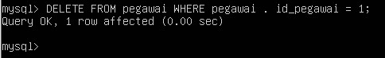

Access Control List
Mengaktifkan Keamanan Standar
Setelah selesai instalasi mysql, maka pertama kali harus dilakukan adalah mengaktifkan kata sandi untuk root dan menghapus anonym user.
Anonym user adalah user tanpa identitas dan password. Aktifkan dan masuk ke dalam system sebagi root dan jalankan MySQL.
Dengan demikian kita harus mengubah auth_socket menjadi mysql_native_password dan memberikan password kepada user root.
Masuk kedalam mysql, kemudian lihat database yang ada.
Terdapat database mysql merupakan database administrative yang berisi table-tabel yang berkaitan dengan pengamanan instalasi MySQL, penyimpanan fungsi-fungsi pendefinisian user, dan penyediaan data yang berkaitan dengan sistem help MySQL dan fungsionalitas time-zone. Dan tentunya fokus pada pencegahan akses-akses yang tidak berhak pada MySQL server merupakan tabel-tabel yang berkaitan dengan keamanan, dimana disebut sebagai grant tables.
Gunakan database mysql, kemudian lihat table yang ada.
Tampilan table yang terdapat pada database mysql
Ketika Anda menginstal MySQL, lima tabel grant ditambahkan ke database mysql. Tabel-tabel ini adalah user, db, host, tables_priv, dan columns_priv.
Fungsi dari kelima tabel tersebut :
a. user
Berisi data user yang mendapatkan izin akses MySQL, asal koneksi dan izin akses kepada user.
Tingkatan akses : Global
b. db
Mengatur database apa saja yang dapat diakses oleh seorang user dan jenis izin aksesnya
Tingkatan akses : Database
c. host
Mengatus asl host yang diperk enankan bagi user untuk mengakses MySQL, jika lebihd ari satu host.
Tingkatan akses : Database
d. tables_priv
Mengatur tabel apa saja yang dapat diakses oleh seorang user dan jenis izin aksesnya.
Tingkatan akses : Table.
e. columns_pri v
Mengatur kolom (field) apa saja yang dapat diakses oleh seorang user dan jenis izin aksesnya.
Tingkatan akses : Kolom – field
Jenis Izin Akses User Privileges
Izin akses bagi user terdirli dari tiga bagian, yaitu:
1. Tingkatan akses user biasa. Mencakup izin akses kedalam database atau kolom, yaitu :
2. Tingkatan akses Administrator or – Global Administrative
Hanya digunakan oleh user setingkat root atau administrator dan tidak diberikan kepada user biasa, yaitu :
3. Tingkatan Akses khusus – Special pri vil egesDapat diterapkan pada setiap user dengan izin akses sebagai berikut :
a. ALL
b. USAGE
Membuat User dan Pemberian Privileges
Disini kita akan menggunakan database testing sebagai database pengujian setiap hak telah diberikan.
Bukti table yang dimiliki dari database testing. a href="#!">
1. Membuat User dengan Hak Akses hanya dapat melihat satu Database dengan Table yang ditentukan.
Jalankan perintah CREATE USER ‘user’@’localhost’ IDENTIFIED BY ‘password’;
GRANT SELECT ON database.table TO ‘user’@’localhost’;
Pembuktian :
Login terlebih dahulu, kemudian jalankan perintah lain.
Database tidak dapat dilihat semua, dan untuk melihat ke table lain akses di tolak.
2. Membuat User dengan Hak Akses hanya dapat melihat satu Database dengan semua Table.
Jalankan perintah CREATE USER ‘user’@’localhost’ IDENTIFIED BY ‘password’;
GRANT SELECT ON database.* TO ‘user’@’localhost’;
Tanda bintang disini berarti All
Pembuktian :
Login dengan user yang telah dibuat tadi.
3. Membuat User dengan Hak Akses Semua data di Database yang telah ditentukan. Termasuk Update,Select, dan Delete.
Jalankan perintah CREATE USER ‘user’@’localhost’ IDENTIFIED BY ‘password’;
GRANT ALL ON database.* TO ‘user’@’localhost’;
Namun jika ingin dapat mengakses semua data dan semua table maka, jalankan perintah GRANT ALL ON *.* TO ‘user’@’address’;
Menentukan IP agar tidak semua host bisa mengakses database dengan user yang kita buat, sehingga jauh lebih aman.
Pembuktian :
Dan User ini dapat menghapus data pada table pegawai.

Menghapus Privileges dari User
1. Menghapus semua Hak Akses dari User tertentu.
Jalankan perintah REVOKE ALL PRIVILEGES ON database.* FROM ‘user’@’localhost’;
Pembuktian :
User tersebut sudah tidak dapat lagi mengakses mysql. Karena semua hak telah dicabut.
Menghapus User dari table user di Database mysql
Menghapus user agar tidak dapat lagi mengkases database mysql.
Jalankan perintah DROP USER ‘user’@’localhost’;

Pada database mysql pada table user, user percobaan telah dihapus dari daftar user.
Source : https://www.academia.edu/28276869/LAPORAN_PRAKTIKUM_ADMINISTRASI_BASIS_DATA_Manajemen_User_dan_Hak_Akses_Basis_Data_